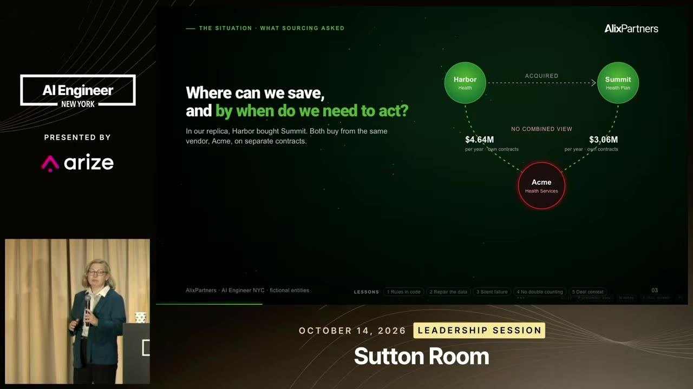
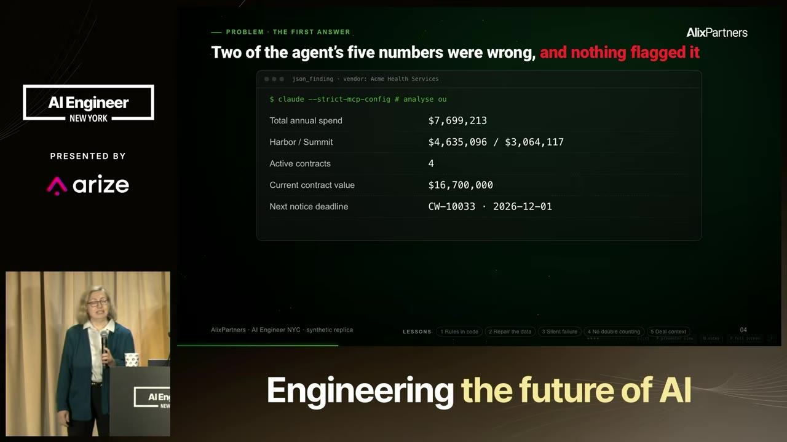
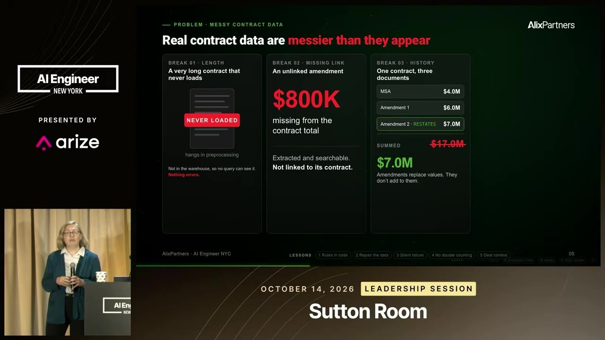
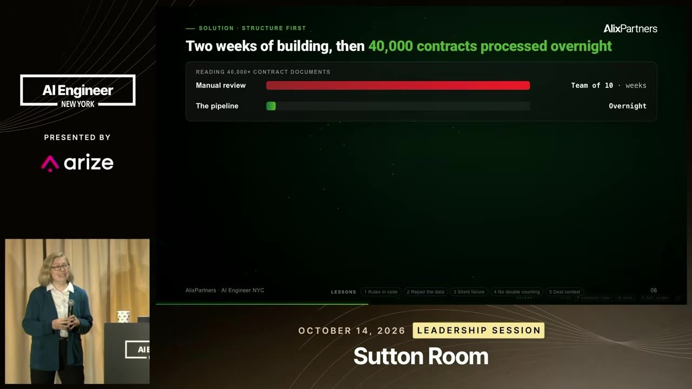
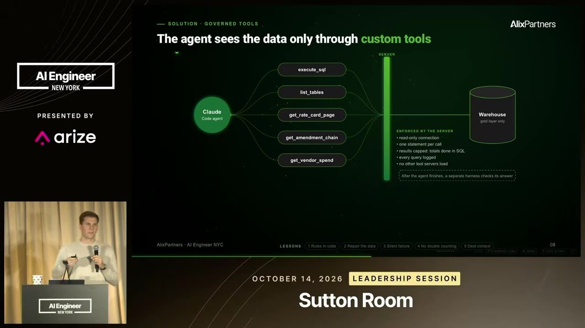

essencial do dia: Mostra as falhas silenciosas que fazem um agente errar com confiança em dados reais e o pipeline que as evita.
Por que o Claude Code errou US$ 800 mil em contratos
Claude Code Looked Right but Missed $800K
Resposta bem formatada do agente não prova que está certa; estruture os dados antes e rastreie cada número até a fonte.
Depois deste talk você consegue desenhar um pipeline que estrutura documentos antes do agente e deixa cada resposta rastreável até a fonte
Em 3 frases
A AlixPartners usou o Claude Code para analisar mais de 40 mil contratos de duas empresas de saúde fundidas. A primeira resposta parecia completa, mas errou um total em cerca de US$ 800 mil e errou em um mês a data limite de uma renovação automática.
As causas estavam nos dados: contratos longos que falharam em silêncio, aditivos órfãos, valores repetidos e tabelas quebradas entre páginas. A solução foi um pipeline de cinco etapas e ferramentas com regras de negócio embutidas.
Outras lições: erros de acesso não podem parecer zero, achados de agentes paralelos precisam ser deduplicados, e o agente precisa saber o que a empresa já está fazendo. A conclusão dos palestrantes é investir cedo em dados estruturados e em contexto de negócio.
Antes de ler
- Parsing de documentos converter PDF e slides em texto estruturado analogia no glossário
- OCR reconhecimento óptico de caracteres analogia no glossário
- Structured output saída estruturada em JSON Schema
- DSPy framework que isola cada chamada de LLM atrás de interfaces tipadas analogia no glossário
- Custom tool ferramenta customizada, executada por você
- Regra de negócio norma da empresa que o código precisa respeitar
O caso: duas empresas, uma pergunta de negociação
Após a fusão, o time de compras quer saber se consegue termos melhores com um fornecedor em comum, quanto economiza e em quanto tempo precisa agir. Quem negocia precisa de citação exata: página do contrato ou linha da fatura. Rastreabilidade é requisito, não luxo.


(ampliar imagem)Resposta bonita, dois erros graves
Gasto anual, divisão entre empresas e contagem de contratos estavam certos. O valor total do contrato errou por cerca de US$ 800 mil, e a data limite para evitar a renovação automática saiu como 1º de dezembro, quando o correto era 1º de novembro. Só a checagem contra o data warehouse revelou isso.


(ampliar imagem)Quatro armadilhas dos dados de contrato
Contratos longos travam no pré-processamento e somem sem aviso. Aditivos órfãos não se ligam ao contrato-mãe. Vários aditivos repetem o valor total, e somar os números dá resultado inflado, pois vale o do aditivo mais recente. Tabelas de tarifas atravessam páginas e perdem o cabeçalho.


(ampliar imagem)Mais 2 ideias deste talk
Pipeline de cinco etapas antes do agente
As etapas: pré-processamento com OCR, classificação do tipo de contrato, extração de termos, tarifas e gastos, e mapeamento dos serviços para categorias de gasto. Só depois o Claude Code analisa as tabelas. Levou cerca de duas semanas para construir e processou os 40 mil contratos em uma noite. Tabelas estruturadas também permitem conferir cada resposta por código.


(ampliar imagem)Ferramentas com regra de negócio embutida
Sobre os dados estruturados, o Claude Code ajudou a criar ferramentas como buscar a página da tabela de tarifas ou o gasto por fornecedor. A regra de negócio, como usar a cláusula de renovação e não a de rescisão, fica no código da ferramenta, não só no prompt. Isso preserva o conhecimento entre sessões e agentes novos.


(ampliar imagem)O caso é um único projeto de consultoria, com dados sintéticos replicando a situação real, e não há taxa de erro medida antes e depois do pipeline. Só dois erros aparecem, e não se sabe quantos outros passaram sem checagem. Os palestrantes vendem uma metodologia da própria firma. Eles também admitem que parte do trabalho de estruturação pode ficar obsoleto em 6 a 12 meses com modelos melhores. Não há custo em tokens nem comparação com um pipeline mais simples.
Teste você mesmo
Responda de cabeça antes de abrir. Lembrar com esforço é o que fixa.
- lembrar Por que somar os valores em dólar extraídos de um contrato e seus aditivos pode dar um total errado?
Ver resposta
Cada aditivo pode reafirmar o valor total do contrato. Somar os números infla o resultado. O texto mostra que vale o valor do aditivo mais recente.
- aplicar Você tem 5 mil PDFs de faturas e quer que um agente responda perguntas de gasto. O que fazer antes de liberar o agente?
Ver resposta
Montar um pipeline que processe os PDFs, classifique, extraia campos em tabelas e registre falhas. Depois dar ao agente ferramentas sobre essas tabelas, com regras de negócio no código, e conferir as respostas por código contra a fonte.
- criticar Que evidência falta para concluir que o pipeline de cinco etapas foi o que corrigiu os erros?
Ver resposta
Faltam taxa de erro antes e depois, comparação com um pipeline mais simples e custo. O relato cobre um caso, com dados sintéticos, e os palestrantes vendem o método da própria firma.
Pegue o erro do total em aditivos de contrato
Você precisa de: Claude ou ChatGPT e três textos curtos de contrato inventados (um MSA e dois aditivos)
- Escreva um MSA com valor total de US$ 5 milhões e dois aditivos, cada um dizendo que o valor total passa a ser US$ 6 e US$ 7 milhões.
- Peça ao modelo só os valores em dólar de cada documento em JSON e some tudo por código. Anote o total.
- Em outra conversa, entregue os textos completos e pergunte o valor total vigente do contrato. Compare com o passo anterior.
- Adicione ao prompt ou a uma função a regra 'aditivo posterior que reafirma o total substitui o anterior' e repita.
Deu certo se: A soma dos números dá US$ 18 milhões, o modelo lendo o texto ou a regra embutida dá US$ 7 milhões, e você explica a diferença.
O que fazer com isso
- Pegue uma pergunta que seu agente já respondeu e confira o número contra a fonte original. Registre se o erro vem do dado, da extração ou do raciocínio.
- Faça seu pipeline registrar toda falha de processamento (timeout, arquivo vazio) em um log visível, em vez de seguir adiante em silêncio.
- Troque no código das suas ferramentas qualquer resposta de erro de acesso que hoje volta como zero ou vazio por uma mensagem explícita de erro.
- Mova uma regra de negócio repetida no prompt para dentro de uma função ou view do banco e faça o agente chamá-la.
Conversa com outros talks
- aprofunda Por que a Datasite parou de construir o próprio parsing · A Datasite falou do custo de manter parsing próprio; a AlixPartners mostra o que dá errado quando o parsing falha em silêncio.
- Servidor MCP privado que anonimiza documentos para o agente · 12 out · em comum: MCP, OCR
- Projetar produto que melhora quando o modelo melhora · 27 set · em comum: MCP, Subagente
- Mil tarefas de agente num sandbox remoto · 12 out · em comum: MCP, Subagente